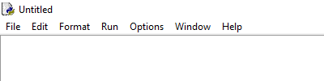

Eine Integrated Development Environment (IDE) ist sozusagen das Word des Programmierens. Es sammelt die wichtigsten Werkzeuge für das erstellen von Programmiersoftware. Doch anstelle von Schriftgrösse, Schriftfarbe und die automatische Rechtschreibprüfung finden sich Programmierrelevantere Werkzeuge wie zum Beispiel das farbliche Hervorheben von bestimmten Befehlen oder eine Befehlsprüfung mit Vervollständigungsmöglichkeiten. Eine Entwicklungsumgebung besteht normalerweise aus einem Editor, Compiler/Interpreter, Linker, Debugger und einem GUI. Falls du noch keinen dieser Begriffe verstehst, keine Angst, sie werden jetzt erklärt.
Die Integrierte Programmierentwicklung
Was ist eine IDE (Integrierte Programmierentwicklung)?
Achtung!
Die wichtigsten Begriffe werden am Seitenende und Im Glossar erklärt.
Ein Editor ist, wie der Name schon impliziert, eine Anwendung in welcher man Text bearbeiten kann. Ein Compiler bzw. Interpreter übersetzt den von uns geschriebenen Programmtext in Maschinensprache, da der Computer nur mit Maschinensprache arbeiten kann. Der einzig grosse Unterschied zwischen einem Compiler und einem Interpreter ist, dass der Compiler den ganzen Programmtext auf einmal übersetzt, während der Interpreter den Programmtext Stück für Stück in Maschinencode übersetzt. Der Linker verbindet die einzelnen Programmmodule zu einem lauffähigen Programm. Die Aufgabe des Debuggers ist es Fehler im Programmcode zu erkennen und sie dem Benutzer mitzuteilen. Bei manchen Entwicklungsumgebungen zeigt es die Fehler, oft farbig markiert, direkt im Quellcode auf. Das Graphical User Interface (GUI) ist lediglich eine grafische Oberfläche, welche das Arbeiten mit dem Programm erleichtert. Dies erreicht das GUI mithilfe von verschiedenen Leisten, Knöpfen oder anderen Steuerelementen.
Die Empfehlenswerteste Python Entwicklungsumgebung
Es gibt viele verschiedene Entwicklungsumgebungen. Welche man Schlussendlich benutzt ist Geschmackssache, es gibt keine "beste" IDE. Für Anfänger ist die offiziell Python IDE zu empfehlen. Es hat viele Funktionen, welcher der Übersichtlichkeit des Quelltextes helfen. Dies ist, besonders für einen Anfänger, sicherlich nicht verkehrt. Zum Beispiel färbt die IDLE die verschiedenen Befehle mit verschiedenen Farben ein. Man kann es hier(Hyperlink: https://www.python.org/downloads/) herunterladen.
Erste Schritte mit der Python-IDLE
Wenn ihr nach der Installation die Entwicklungsumgebung nun öffnet (ihr könnt unter Windows nach "IDLE suchen und diese dann öffnen) findet ihr euch in der sogenannten Shell wieder. Die Shell ist normalerweise für den Anfang ganz in Ordnung, da man allerdings nur eine Linie eingeben kann ist es auf lange Sicht allerdings nicht optimal. Wenn man also in naher Zukunft auch grössere Programme programmieren möchte, und das ist hier klar ein Ziel, sollte man früher oder später vollwertige Programme schreiben und mit richtigen Quellcode arbeiten will, sollte man mit dem Editor arbeiten. Wenn ihr ein bereits erstelltes Dokument mit dem Editor bearbeiten wollt drückt ihr Control + O (oder über den Reiter File --> Open...) oder wenn ihr ein neues Dokument erstellen wollt müsst ihr, Control + N (oder File --> New File) drücken. Jetzt seid ihr bereit, euer erstes Programm zu schreiben!
Wo liegt der Unterschied zwischen der Shell und dem normalen Editor? (max. 1P.)
Welchen Reiter müsstest du auswählen wenn du in der Python IDE ein bereits bestehender Sourcecode bearbeiten möchten würdest. (max. 1P.)

Du hast momentan: Punkte Du braucht noch Punkt(e) um das nächste Kapitel freizuschalten.
Begriffserklärungen
IDE/Entwicklungsumgebung: Entwicklungsumgebung in welcher die wichtigsten Werkzeuge und Hilfsmittel gesammelt sind um das Schreiben von Programmen zu ermöglichen bzw. zu erleichtern.
Quellcode: Ein Text, welcher in einer Programmiersprache geschrieben worden ist und von Menschen gelesen werden kann. Der Computer kann die verschiedenen Befehle einer Programmiersprache in sogenannter Maschinensprache übersetzten, welche dann von einem Computer ausgeführt werden kann.
Copyright © Yves Bischofberger 2017